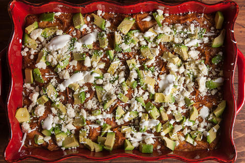

Breakfast casseroles are easy additions to any breakfast. This casserole is inspired by Chiaquiles; the recipe will make an entire casserole, so there will be leftovers to enjoy the next day.

Materials:
- Small saucepan
- Large non-stick frying pan
- Spatula
- Slotted spoon
- Blender
- Bowl
- Whisk
- 9-by-13 baking dish
- Paring knife
Ingredients for the sauce:
- 3 dried ancho chiles, stemmed
- 1 (28-ounce) can whole peeled tomatoes in their juices
- 2 jalapeños, stemmed and coarsely chopped
- 1/2 medium white onion, coarsely chopped
- 2 medium garlic cloves, coarsely chopped
- 1 1/2 teaspoons kosher salt
- 2 tablespoons vegetable oil
Ingredients for the casserole:
- 10 large eggs
- 2 1/2 cups whole milk, plus more as needed
- 1 tablespoon Mexican-style hot sauce, such as Cholula or Tapatío, plus more for serving
- 1 teaspoon chili powder
- 1 teaspoon kosher salt
- 1 (13- to 14-ounce) bag corn tortilla chips
- 2 medium avocados
- 1 1/2 cups crumbled Cotija cheese (about 7 1/2 ounces)
- 1/2 cup crema or sour cream
- 1/2 cup bacon bits
Preheat oven to 425 degrees. Steps 1-4 describe how to make the casserole sauce; steps 5-10 describe how to assemble the casserole.
- Gather materials. For help finding materials and ingredients, consult the guide to my kitchen
- Bring a small saucepan of water to a boil over high heat. Meanwhile, place the chiles in a single layer in a large frying pan and toast over medium heat, flipping once, until crisp, fragrant, and starting to puff, about 4 minutes total.
- Add the chiles to the saucepan, remove from the heat, and let them soak until they’re soft and pliant, at least 10 minutes. Reserve the frying pan (no need to wash it).
- Using a slotted spoon, transfer the chiles to a blender. Add the tomatoes and their juices, jalapeños, onion, garlic, and salt and blend until smooth; set aside.
- Heat the oil in the reserved frying pan over medium heat until shimmering. Add the sauce and simmer, stirring occasionally, until it has thickened slightly and the flavors have blended, about 10 minutes. Remove from the heat and set aside.
- Place the eggs in a large bowl and whisk until they’re broken up. Add the measured milk, measured hot sauce, chili powder, and salt and whisk until evenly combined. Pour into a 13-by-9-inch baking dish.
- Place the chips in the bowl used for the egg mixture (no need to wipe it out), add the reserved chile sauce, and gently toss to coat. Transfer the chips to the baking dish and spread them into an even layer.
- Bake until the eggs are just set, about 30 minutes. Transfer the casserole to a wire rack.
- Halve and pit the avocados. Using a paring knife, score the flesh of the avocado halves in a 1/2-inch-wide crosshatch pattern (be careful not to cut through the skin). Using a spoon, scoop the avocado pieces out and sprinkle them over the casserole.
- Sprinkle the cheese and bacon bits over the avocado. Drizzle the crema evenly over the casserole (if your crema or sour cream is too thick to drizzle, mix it with milk, 1 teaspoon at a time, until it reaches the desired consistency). Serve with extra hot sauce.
- Eat and enjoy!